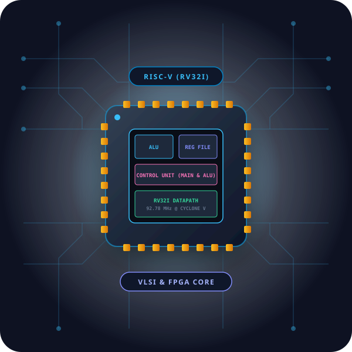
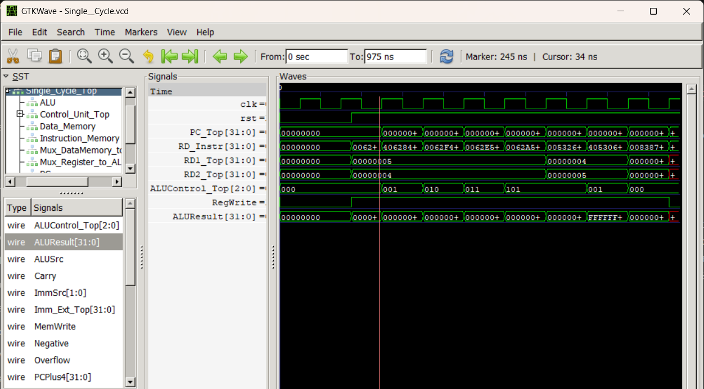
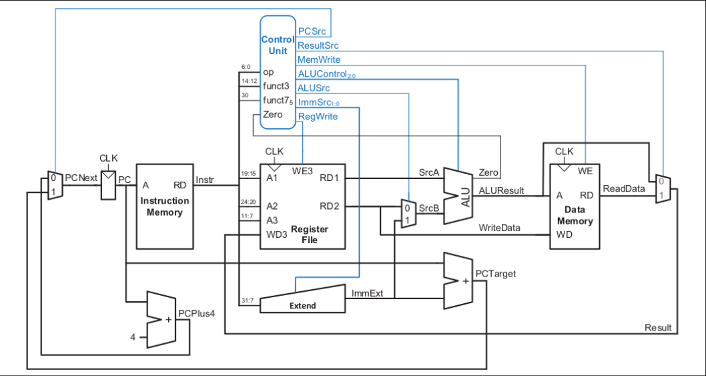

Hi, I'm Avinash Barik
Focusing on VLSI & RISC-V
Electronics & Communication Engineering (ECE) student passionate about digital design, computer architecture, and embedded systems. Experienced in designing processor architectures with Verilog HDL, timing closure on FPGAs (Intel Cyclone V), and embedded firmware.

About Me
I am an Electronics & Communication Engineering (ECE) student driven by a deep curiosity for how high-level software instructions translate into digital logic gates and physical silicon transitions.
My work revolves around digital IC design and hardware description languages (Verilog HDL). Recently, I built and verified a complete single-cycle 32-bit RISC-V (RV32I) processor core, successfully achieving timing closure at 92.78 MHz Fmax on an Intel Cyclone V FPGA.
Engineering Principles
- Synthesizable RTL: Clean, deterministic Verilog avoiding latch inference.
- Rigorous Verification: Corner-case verification of RAW data hazards, sign extension, and arithmetic overflow.
- Timing Closure: Design-for-timing using Synopsys Design Constraints (SDC) and static timing analysis.
- Silicon Efficiency: Minimizing logic footprints and ALM consumption on target FPGA devices.
Technical Skills & Toolchain
RISC-V & Digital Hardware Projects
Hardware Experience & Verification Graphics
Intel Cyclone V FPGA Synthesis Closure
| Synthesis Parameter | Result | Context / Notes |
|---|---|---|
| Max Clock Freq (Fmax) | 92.78 MHz | Worst-case corner (Slow 1.1V, 85°C) |
| Logic Utilization | 186 ALMs (< 1%) | Highly compact logic footprint |
| Dedicated Registers | 334 D-FFs | PC, 32x32 register file, control |
| Target FPGA Device | 5CSEBA6U19C6 | Intel Cyclone V SE FPGA |
| Clock Constraint (SDC) | 50.00 MHz (20 ns) | Met with zero timing violations |

Verifies arithmetic, negative two's complement, and RAW data dependency writeback in cycles 1 & 2.

Integrated Harvard architecture: instruction memory, 32x32 register file, 32-bit ALU, and control unit.
Get In Touch
I am actively seeking internships, research collaborations, and full-time entry-level hardware / VLSI engineering opportunities. Feel free to reach out directly!